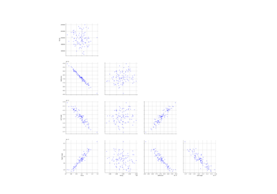

DeflectionTube¶
- class DeflectionTube¶
Data class for the deflection of a tube model.
Examples
>>> from openturns.usecases import deflection_tube >>> # Load the deflection tube model >>> dt = deflection_tube.DeflectionTube()
- Attributes:
- dimConstant, the dimension of the problem.
dim=6
- modelSymbolicFunction
Model of the deflection.
- XFNormal distribution
ot.Normal(1, 0.1)
- XENormal distribution
ot.Normal(200000, 2000)
- XLDirac distribution
ot.Dirac(1.5)
- XaDirac distribution
ot.Dirac(1.0)
- XDDirac distribution
ot.Dirac(0.8)
- XdDirac distribution
ot.Dirac(0.1)
- inputDistributionComposedDistribution
The joint distribution of the input parameters.
- __init__()¶
Examples using the class¶

Calibration of the deflection of a tube
Calibration of the deflection of a tube